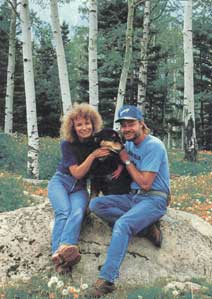

Pet Concerns
We called him Amigo, and friend he most surely was.
WHEN CAROLYN AND I RETURNED home after an absence of many months, he was waiting at our cabin's door. His name, we were told by the kind neighbors who had rescued and been feeding him, was Amigo. Five, perhaps six years old, golden retriever-Gordon setter mix, overweight, unkempt, shaggy. A fat black mutt.
Amigo adopted us on the spot, and set about sweeping Carolyn off her feet. They soon became inseparable.
It took a little longer for me. It's difficult to offer love when no love is returned, and Amigo shied away from me at first, cringing when I stooped to pet him, or slinking off at my approach. There must have been cause for this odd behavior somewhere in his mysterious past (we heard rumors that he'd once been shot), because it wasn't just me Amigo feared and avoided, but all men.
Still, patience and kindness earn trust, and Amigo and I gradually came to be friends. Good friends.
We three stood motionless as wild creatures passed.
This was a new experience for me, though I'd owned several dogs before. The first was a cocker spaniel given to me by an aunt when I was five and which, in typical rug-brat fashion, I bothered mercilessly; it eventually died young of distemper. Next came a spitz my father brought home when I was 12 and which we kept boarded into a corner of the garage and generally neglected; it eventually made good an escape. A couple of beagles I kept as rabbit hounds. A few others. The last of that unfortunate lot came and went more than 20 years ago, and while I had "owned" them all, I had allowed none to become a real friend, much less part of the family. I, like the majority of dog owners, was simply ignorant of the possibilities and moral responsibilities.
Unlike cats, dogs are totally dependent upon their masters. Cats (with the exception of lions) evolved as lone hunters, a circumstance strongly encouraging independence. Dogs, however, have always been pack animals (with the exception of foxes), instinctively craving companionship and the guidance of a competent leader. While a domestic cat can entertain and, in part, even feed itself, a dog relies solely on its master for sustenance-both material and emotional. Having a dog, therefore, is a special responsibility for which, as with having children, few of us are properly qualified or inclined.
It was Carolyn who taught me, through example, the myriad joys that come to those who learn-not just to love and appreciate animals-but to make them a significant part of their lives. And Amigo, too, was a teacher. While probably no brighter and certainly no more handsome than those other dogs I had owned, he was far more personable and endlessly patient with my stumbling attempts at friendship. And, best of all, he smiled a lot.
But Amigo did suffer from something of an image problem, a problem our friends enjoyed immensely. Almost every time we had a visitor in those first months after adopting Amigo, we could expect to be entertained with witty comments regarding his appearance. Such as: "Is that a dog or a hairy hippo?" and "Well, he certainly hasn't missed any meals." Other, more subtle observers simply ignored Amigo's given name and called him Bear, or Griz.
Granted, Amigo was plump, but none of our comedian-friends had petted him under the belly. If they had, they might have discovered that most of what hung there wasn't fat, but hair-a pelage so long, thick and matted that it drastically lowered the poor beast's undercarriage, making his legs appear about three inches long. One candid observer allowed as how Amigo looked like a bloated wiener dog in a road-killed skunk coat.
So we put him on a diet. We cut and groomed his hair. And while he would never be streamlined, Amigo gradually came to look more like a dog than a hippo, bear or distended dachshund.
He seemed to appreciate our efforts to improve his looks, responding by redoubling his affection.
If he perceived that we were in danger, he charged to our defense. He picked up on and reacted to our moods. Shared and amplified our joys. Smiled at us when we were down. If Carolyn and I should argue, Amigo became deeply troubled, either placing himself between us and pushing us apart with his muzzle, or simply leaving the room.
The concept of "dog obedience" didn't apply. Amigo wanted to please. And he knew how.
For our part, Carolyn and I tried to mirror the remarkable patience and dedication he showed us.
On our long evening walks in the woods surrounding our rural Colorado home, Amigo liked to trot out ahead, looking back frequently to keep us in sight and confirm our approval. When we called him, he returned immediately. The first couple of times deer or elk spooked at our near approach and ran, Amigo gave brief chase, as hunter-breed dogs are wont to do. But we called him back and otherwise gently discouraged such behavior, and he soon learned to come to heel at the appearance of wildlife, often making it possible for the three of us to stand motionless while wild creatures passed nearby, unaware of our silent presence.
Elk, in particular, Amigo came to love. Or, at least, he loved their essence. There was no restraining him from the primal delight of rolling in earth freshly soaked with elk urine, feet churning the air, a big dumb grin on his face. (In time, I too grew to rather appreci ate this funky, musky scent, though I have rarely been moved to roll in it.)
The dark news clouded our lives.We began spoiling him.
Likewise, Amigo got on marvelously with the dozen or so chipmunks and ground squirrels that hang around our cabin for the sunflower seeds we put out. An ardent napper-in-the-sun, he would snooze on undisturbed, at most only raising an eyebrow or curling the tip of his tail as they scaled his flanks like furry mountains and chattered from atop the ridge of his back.
Amigo had no doghouse; our home was his. He slept on the floor, his body pressed hard against our bed, and soon learned to spare us the horror of the morning alarm. After a few weeks of being jangled awake by my cacophonous Big Ben, this "dumb animal" came to know, within 15 minutes one way or the other, when 6:30 was approaching. After yawning and stretching, he would wake me with warm breath on my face and heavy tail thumping the wall.
Yes, we were a family, the three of us.
Then, one evening last May, three years to the month since Amigo had inserted himself into our lives, Carolyn noticed two marble-ized lumps on his throat. When they hadn't disappeared after a couple of days, I took him to the vet. Lab tests confirmed the worst: lymphosarcoma. Lymph-gland cancer. Steroids could slow the progress of the disease and keep our friend feeling better longer, but cancer is the first killer of older dogs; no matter that Amigo, at eight or nine, was little more than middle-aged, the poison was in him and we knew that his demise was simply a matter of sooner or later. Later, the vet figured, meant perhaps nine months; sooner, as little as one.
This dark news clouded our lives. We canceled our upcoming vacation (we had planned to board him at the local Canine Hilton). From that moment on, he was never out of our sight. Nor out of our thoughts. We began spoiling him, providing him with everything we knew he enjoyed, up to and including Haagen-Dazs ice cream.
For a while, the medication helped Amigo to hold his own. The lumps on his throat atrophied, and his energy and appetite were good. But .only for a while. He soon developed an allergy to the steroids, forcing us to discontinue their use. Other medications failed to help, and our patient soon sickened to the point where he drank barely enough water to stay alive, ate virtually nothing (not even Haagen-Dazs) and panted in his sleep. Always an odorless dog, his disease now filled the house with the sour stench of death pending.
For two days he hiked with us and ate like a shark. We were cheered.
We knew his time was nearing, and I think Amigo knew it too. We didn't want to lose him a day before we had to, but neither could we subject him to prolonged suffering simply because we were afraid to let him go. But-the frustrating unknown-just how much was he suffering? Did he just feel tired and dopey, or was he silently enduring serious pain? If only there had been some way for him to let us know what he wanted.
Time for serious distraction. We all loved camping, so, come a clear Friday evening in July, we loaded a weekend's supply of gear and food in the truck and headed into the cool, high country near Telluride.
The effect was miraculous. For two days, Amigo bounded eagerly in and out of the truck as we wheeled from one minor adventure to another. He hiked with us, romped in fields of wildflowers, swam in cold mountain water, ate like a shark. We were cheered.
The brave old soul must have given that wonderful weekend his very last drop of energy and enthusiasm; when we returned home, he sacked out in his favorite napping spot and couldn't seem to get up again. Or simply chose not to. On Tuesday morning, resigned to the inevitable, we took him to the vet.
I lifted Amigo out of the truck, placed him gently on the ground and kept my hands on him until I was certain he could stand on his own. He then amazed us both by walking into the clinic just as he always had-calm, unafraid, close by our sides, unleashed.
The doctor examined him briefly, affirmed what we already knew, then left us alone to say our good-bys. It was not an easy thing to do.
When the doctor returned, he snugged a tourniquet around Amigo's right front paw and gently inserted the needle just below the band. Carolyn was there, stroking her old friend's sides and speaking to him quietly, calmly-though I knew she was raging inside. I was kneeling at Amigo's head, breathing soft and close into his nostrils.
As the vet withdrew the spent syringe and released the tourniquet, Amigo's face showed a hint of change. It was, there can be no doubt, the beginnings of a smile. Then the light left his eyes.
Amigo snoozes now out among the white aspen saplings at the edge of the woods. We speak to him when we pass, Carolyn and I do. Our greatest hope is that he knew how totally we loved him. I believe he did.
Even now, months since I knelt to lay my dog in the earth, when I drop a crumb of meat or a bite of ice cream on the floor, I think to call him to come and lap it up-then remember. When there are choice leftovers after a restaurant meal, I have caught myself asking for a doggie bag before coming to the hard realization that it isn't needed. Many's the dawn I have lain in restless sleep, waiting for the familiar sound of Amigo's tail drumming a welcome wake-up on the pineboard wall. For Carolyn, such lapses come even more frequently. Old, comfortable patterns die hard.
We will have another dog someday. But not just yet. Amigo is still too much with us. We couldn't help but draw comparisons, and rarely can realities of the present measure up to nostalgia for the past.
When the time does come, it will be no frantic puppy we adopt. Rather, let the fates bless us with another scruffy old castaway. (Older dogs are more mellow, less inclined to roam and generally better behaved. A puppy, like a child, is a growing mystery. With an old dog, what you see is what you get. And they're always so very grateful.)
Amigo helped open up my life. And now he is teaching me to deal with the immutable loss that the death of a loved one-canine, human or otherwise-represents. It's less a true sorrow for the fate of the dead we feel, I have come to believe, than misplaced self-pity.
Too often, we keep animals for wrong and selfish reasons, subjecting them to meager lives at best, living hells at the worst. We imprison big dogs in tiny apartments, taking them out only for brief evening strolls-to soil the public's sidewalks and wet the neighbors' shrubs. And who has not seen, or heard, a dog tied out in a suburban back yard and ignored, that in time turned mean and loud in its loneliness and frustration? Of such anthropocentric sins I have been guilty.
But Amigo . . . Amigo was my friend.
I wish a similar blessing for you.And for your pets.
|
 A smiling Amigo enjoys the mountains with his friends. |
|
|